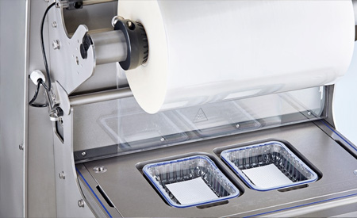

Щоб забезпечити безпечну і правильну експлуатацію машини, знадобиться провести професійну наладку
пакувального обладнання, яку проводять фахівці компанії AxisMetal. Вони допоможуть зробити монтаж,
регулювання і тестування агрегату в різних робочих режимах, а також запропонують консультацію для
замовника, спрямовану на навчання персоналу користуванню трейсилером.
Пресс-форми для трейсилера: процес виготовлення

Спеціальні прес-форми для трейсилера дозволяють працювати з різними за формою і розмірами
контейнерами
для майбутньої упаковки продукції. В процесі виробництва команда фахівців використовує
інструментальні
сталі підвищеного ступеня міцності, які не піддаються негативному впливу корозії.
Під час створення прес-форми для трейсилера ми проходимо кілька підготовчих і обов'язкових етапів:
- Разом із замовником відбувається процес складання докладного технічного завдання (враховуємо
кількість форм, їх матеріал, форму, розміри та інше).
- Відбувається розробка і подальше узгодження майбутнього дизайну.
- Відбувається розробка і узгодження конструкторської документації.
- Процес виготовлення прес-форми.
- Проведення пуско-налагоджувальних робіт, в результаті яких наш фахівець виконує установку форми
в
пакувальне обладнання замовника, консультує з приводу подальшої експлуатації машини.
- Надання гарантійного обслуговування.
В результаті кожен клієнт отримує можливість придбати необхідні прес-форми для трейсилера високої
якості.